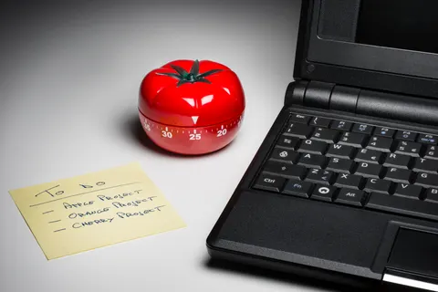

PROCRASTINATION
The Unseen Thief of Time
Procrastination is often referred to as the thief of time. We have all been there: staring at a blank screen, knowing we have a deadline approaching, yet finding ourselves drawn to scrolling through social media, organizing our desk for the fourth time. Despite knowing the negative consequences of delaying our tasks, the temptation to put things off until "tomorrow" remains incredibly strong. But what exactly drives this behavior, and how can we reclaim our time?
Why Do We Procrastinate?
Many people mistakenly believe that procrastination is simply a matter of poor time management or a lack of willpower. However, psychological research suggests that it is much more complex. It is essentially an issue with emotion regulation. When a task makes us feel anxious, incompetent, bored, or overwhelmed, our brain instinctively looks for a way to escape those negative feelings. By avoiding the task, we get a temporary mood repair—a fleeting sense of relief. Unfortunately, this relief is quickly followed by guilt, increased stress, and an even tighter deadline.
DELAY! of productive work..
Common Causes of Delay
- Fear of Failure: The anxiety that the finished work will not meet expectations, leading to avoidance.
- Perfectionism: Waiting for the "perfect" time, tools, or mood to start, which realistically never arrives.
- Lack of Immediate Reward: Not seeing the immediate value or payoff in completing the task right now.
Strategies to Overcome the Delay
Breaking the cycle of procrastination requires a shift in both mindset and daily habits. You cannot simply punish yourself into being productive; you need practical, actionable strategies to make starting easier and more rewarding. Here are some proven steps to help you beat the habit and regain control of your schedule:
- Use the Two-Minute Rule: If a task takes less than two minutes, do it immediately. For larger, daunting tasks, commit to working on them for just two minutes. Often, getting over the initial hurdle of starting is the hardest part.
- Break Tasks Down: A massive project feels overwhelming. Break it into tiny, actionable steps. Instead of writing "Finish research paper" on your to-do list, use "Write the first paragraph of the introduction."
- Practice Self-Compassion: Studies show that forgiving yourself for past procrastination actually makes you less likely to procrastinate in the future. Let go of the guilt and start fresh.
- Minimize Distractions: Put your smartphone in another room, use website blockers for social media, and create a dedicated, clean workspace.
- Try the Pomodoro Technique: Work with complete focus for 25 minutes, then take a 5-minute break. This makes work feel like a manageable game and provides built-in rest periods to keep your mind fresh.

Procrastination vs. Relaxation
It is important to distinguish between taking a well-deserved break and procrastinating. While both involve not working, the psychological and emotional outcomes are vastly different. Below is a comparison to help you identify which one you are experiencing on a daily basis:
| Procrastination | Relaxation |
|---|---|
| Actively avoiding a necessary task | Intentional and planned resting |
| Guilt, anxiety, dread, and shame | Calm, peace, and rejuvenation |
| Increased stress and rushed, poor-quality work | Restored energy and improved focus |
| Feels involuntary, compulsive, or out of control | A conscious, deliberate choice |
Further Reading and Resources
If you want to dive deeper into the psychology of this topic, there are excellent resources available online. You can read more about the psychological aspects and history of this behavior on Wikipedia's Procrastination page. Understanding the science behind our actions is a fantastic way to start changing them.